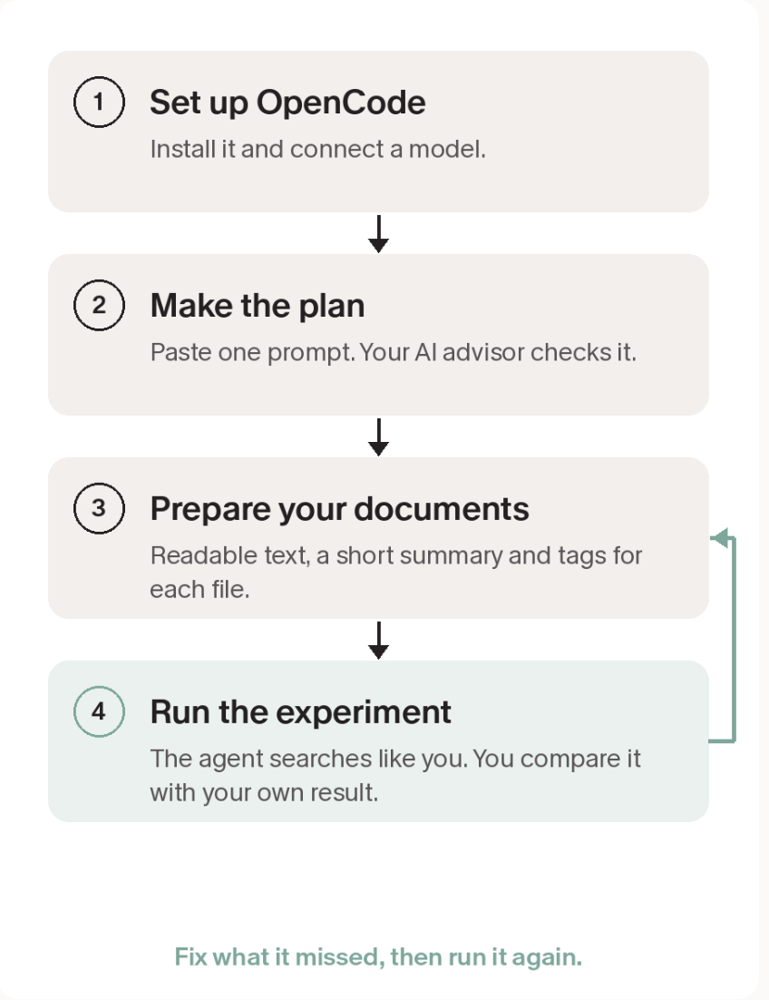

A build guide
How to Make the First Version of Your Legal Precedent-Finding Search Agent
Made for Gaurav
I asked myself 'what's the quickest way I'd build a precedent-finding search agent' such that you can execute it yourself.
To do so, here is a step-by-step guide with specific prompts and things for you. For small doubts, I'm sure GPT Astra can read this and help you troubleshoot. For larger ones, feel free to reach out to me.
Section 2 of 9 · the target
What success looks like
Write the target down first. Every fix below is scored against this sentence.
Think about the most recent question you searched for as a human being, in your own files, and the process you followed to answer it. Success here means we can reproduce that exact search, find all the right documents exhaustively, and hand you something you can check line by line against your real human output.
Three things that sentence asks for:
- The agent reproduces the exact search you did by hand.
- It finds all the right documents, exhaustively.
- You can check its answer line by line against your own.
Section 3 of 9 · choose a route
To Get You There
There are two ways to do this. One is thorough and heavier. One is simple and enough for a first version. I suggest the simple one.
Complete version
Use RAG. RAG means the AI looks up the right pieces of your documents before it answers. It is the standard choice when you have a very large number of documents. It also takes more setup and more upkeep.
Simple version, for a prototype
Give every document a short summary and tags, then search those. Same goal, far fewer moving parts. You can still move to RAG later, and the work you do now carries over.
The route this guide followsSection 4 of 9 · the map
The plan
Here is the plan I would follow, using a free tool called OpenCode to build small pieces you can test one at a time. Your own AI advisor stays in the loop: it checks the plan and tells you what to fix, while OpenCode does the building.

The four steps. The last one loops back until it matches your own result.
The rest of this page follows the loop in that diagram, one piece at a time.
What is OpenCode?
OpenCode is a free, open source AI assistant that works inside a folder on your computer. You tell it what you want in plain language. It reads your files, writes the small programs, runs them and shows you the result. Think of it as a very fast assistant who does the building while you do the judging.
One thing to know: it needs an AI model to think with. Some free models are offered inside the app, but they change over time and the privacy terms differ. Check them before you use real client documents.
What do I actually feed?
- Copies of 10 to 20 documents you are allowed to use. Never your only copy.
- The most recent question you searched for, written the way you would say it.
- The steps you took to find the answer, in order.
- The documents you ended up using. This is your answer key.
Start with documents that are not sensitive, or with client details removed, until you know where the data goes.
Section 5 of 9 · piece 1 of 3
Piece 1: Set up the free builder
Nothing else works until this is in place. It takes about ten minutes.
-
Copy this prompt into ChatGPT:
Setup: install OpenCode and load my configFirst read opencode.ai/download and install it for me. Then Read the README.md at https://github.com/bmnpeach/opencode-config. Clone that repo and follow the setup instructions inside it. Break this into sub-tasks and Update your to do's accordingly.
- Make a new folder on your computer called precedent-search. Inside it, make a folder called documents.
- Open OpenCode in the precedent-search folder.
- When it asks you to connect a model, pick one of the options it offers and follow the steps.
You can type "hello" into OpenCode and it answers.
Section 6 of 9 · piece 2 of 3
Piece 2: Create the strategy
This prompt makes OpenCode ask you the right questions first, instead of guessing what you want.
I am a lawyer. I want to build a small tool that finds legal precedents in my own documents. I am not a programmer, so explain everything in plain language and do one small piece at a time. First, ask me for my most recent real search: the question, the steps I followed, and the documents I ended up using. Write it down in a file called ANSWER_KEY.md. Do not change anything else yet. Then write a plan with these pieces, in this order: 1. Turn my scanned files into readable text, keeping the page numbers. 2. Write a short summary for each document, with main tags and secondary tags. 3. Build a simple way to search those summaries and tags, then read the matching pages. 4. Answer my question with a list of documents and page references I can check. 5. Compare the answer with ANSWER_KEY.md and list what was missed. Do not use embeddings or a vector database. Never edit my original files; work on copies. After each piece, stop and tell me how to check it before you continue. Keep a file called LOG.md with what you did and what failed.
- Paste it into OpenCode and answer its questions about your most recent search.
- Copy the plan it writes and show it to your AI advisor. Ask: "What is missing or risky in this plan for a lawyer?"
- Give OpenCode the advisor's answer and let it update the plan.
You have a plan you understand, and a file called ANSWER_KEY.md with your own search written down.
Section 7 of 9 · piece 3 of 3
Piece 3: Get your documents ready
The tool can only find what it can read. A scan is a picture. This step turns each document into text, a short summary and tags, so a search can find it.
- Copy your 10 to 20 documents into the documents folder.
- Paste the prompt below. It starts with five documents so you can check the quality early.
- Open a few of the summaries and check them against the originals. Tell OpenCode what to change, then let it do the rest.
Look in the folder called documents. For each file: 1. If it is a scan or image, read it with an OCR step and save a text version next to it, one file per document, with the page number marked at the start of every page. 2. Write a short summary (five lines at most): what the document is, who the parties are, the court or authority, the date, and the legal point it decides. 3. Add primary tags (the main legal topics) and secondary tags (narrower issues, statutes, terms). Save the summaries and tags in one file called INDEX.md, one entry per document, with the file name and page numbers. Start with the first five documents only. Stop and show me the result so I can check it.
Every document has text, a summary and tags, and the five you checked match the originals.
What if my database only works in a browser?
If you cannot export the documents, leave that for later. Start with the documents you already hold as files. Searching a browser-only database is a separate job, and it depends on what access you are allowed.
Section 8 of 9 · the loop
Then run the experiment
This is where you find out if it works. The agent acts like you. You judge it against your own result, and keep telling it how to fix the database until it matches.
Act like me. Take the question in ANSWER_KEY.md and search only the prepared files, using INDEX.md first and then reading the pages that match. Show each step you took, in order, like a human researcher would. At the end give me: every document you would use and the page numbers, a one-line reason for each, and anything you are not sure about. Do not use anything outside these files.
Now compare what it found with your answer key. Where it missed something, take both to your AI advisor.
Here is what the agent found: [paste its result]. Here is my own result from ANSWER_KEY.md: [paste it]. What did the agent miss or get wrong, and why? Give me one clear instruction I can paste into OpenCode to fix it. Look at the tags, the summaries and the search steps before anything else.
Paste the advisor's instruction into OpenCode, then run Prompt 3 again. Repeat until the agent finds what you found.
The agent finds the same documents you did, with page numbers you can check.
Section 9 of 9 · the outcome
What this leaves you with
Several agents working together, set up quickly and simply, without paying for a custom build.
- Your own search written down as ANSWER_KEY.md, the key every run is scored against.
- Every document turned into readable text with a five-line summary and tags.
- A search agent that answers with documents and page numbers you can check.
- A repair loop: compare, ask the advisor, paste the fix, run again.
- Three roles working together: the advisor plans and checks, OpenCode builds, the agent searches while you judge.
- A project folder you can hand to the next version, or to a developer, without starting over.